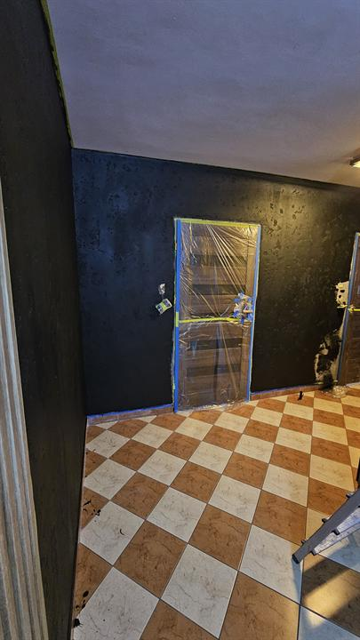
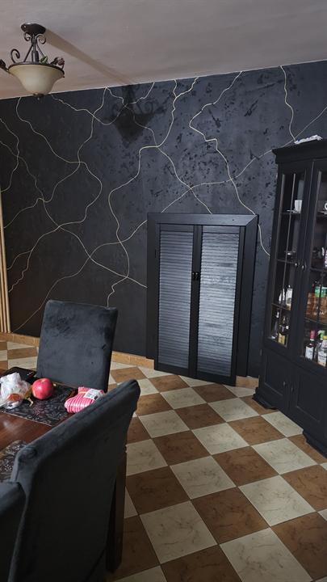

Bielsko-Biała i okolice
Ściany dekoracyjne
Beton architektoniczny, trawertyn, efekt marmuru i metaliczne płatki — faktury wykonywane ręcznie. Robimy ściany akcentowe w salonach, przedpokojach i lokalach usługowych.
- Beton architektoniczny
- Trawertyn i efekt marmuru
- Zabezpieczenie lakierem
CenaWycena indywidualnazależy od techniki i metrażu — wyślij zdjęcie ściany i inspiracji
Kiedy nas wołasz
- Ściana za telewizorem lub łóżkiem, która ma nadać charakter całemu pomieszczeniu.
- Przedpokój i klatka schodowa — faktura jest trwalsza i mniej widać na niej zabrudzenia niż na zwykłej farbie.
- Lokale usługowe, recepcje, restauracje i salony, w których wnętrze buduje markę.
- Zniszczona ściana, którą zamiast zwykłego malowania chcesz zamienić w ozdobę.
Zakres i sposób wykonania
Beton architektoniczny
Gładka lub szorstka powierzchnia z naturalnymi porami i przebarwieniami, także w podziale na płyty. Efekt surowego betonu bez ciężaru i kosztu prawdziwego betonu.
Trawertyn i efekt kamienia
Faktura naturalnego kamienia z charakterystycznymi porami i żyłkowaniem — w wersji klasycznej lub drapanej. Pasuje do wnętrz w stylu nowoczesnym i klasycznym.
Efekt marmuru, metaliczne płatki i złocenia
Wielowarstwowe efekty marmuru z żyłkami oraz głębokie, ciemne faktury z płatkami metalu. Przykłady z naszych realizacji — czarna ściana ze złotymi płatkami i marmur ze złotymi żyłkami — znajdziesz w galerii niżej.
Glinka wenecka, efekt piasku i tynki strukturalne
Subtelne, aksamitne powierzchnie o delikatnym połysku albo matowe faktury przypominające piasek. Dobre tam, gdzie efekt ma być elegancki, a nie krzykliwy.
Przygotowanie podłoża
Dekoracja wymaga równego, zagruntowanego podłoża. Usuwamy łuszczące się powłoki, naprawiamy ubytki i wyrównujemy ścianę w ramach zlecenia — nie musisz szukać osobnej ekipy.
Zabezpieczenie i trwałość
Gotową ścianę zabezpieczamy lakierem lub woskiem dobranym do miejsca. Po zabezpieczeniu powierzchnię można przecierać na wilgotno, a faktura nie chłonie brudu.
Jak przebiega realizacja
Inspiracja
Wysyłasz zdjęcie ściany i efektu, który Ci się podoba — z naszej galerii albo z internetu.
Dobór techniki i kolorów
Doradzamy, co sprawdzi się w Twoim wnętrzu i świetle, i ustalamy kolorystykę.
Przygotowanie podłoża
Naprawiamy i wyrównujemy ścianę, gruntujemy pod wybraną technikę.
Wykonanie warstw
Nakładamy kolejne warstwy ręcznie, z przerwami na schnięcie — to one budują głębię efektu.
Zabezpieczenie i odbiór
Lakierujemy lub woskujemy powierzchnię, sprzątamy i oddajemy gotową ścianę.
Od czego zależy cena
- Technika — liczba warstw i czas pracy różnią się między betonem, trawertynem a marmurem.
- Powierzchnia — jedna ściana akcentowa czy całe pomieszczenie.
- Stan podłoża — ile trzeba naprawić przed wykonaniem dekoracji.
- Materiały — płatki metalu, specjalne masy i rodzaj zabezpieczenia.
Wszystkie ceny podajemy netto i z materiałem. Dla mieszkań i domów najczęściej obowiązuje 8% VAT, w pozostałych przypadkach 23%.
Policz orientacyjną cenę w minutęNajczęstsze pytania
Ile kosztuje ściana dekoracyjna?
Cena zależy od techniki, powierzchni i stanu ściany, dlatego wyceniamy ją indywidualnie. Najszybciej: wyślij zdjęcie ściany z przybliżonymi wymiarami i zdjęcie efektu, który Ci się podoba — odpowiemy z orientacyjną ceną.
Czy ścianę dekoracyjną można myć?
Tak. Po zabezpieczeniu lakierem można ją przecierać wilgotną ściereczką. Rodzaj zabezpieczenia dobieramy do miejsca — inny do salonu, inny do przedpokoju czy kuchni.
Czy da się zrobić dekorację na starej, zniszczonej ścianie?
Tak, po przygotowaniu podłoża. Przykład z naszej galerii: w przedpokoju ze zniszczonej pomarańczowej ściany zrobiliśmy czarną fakturę ze złotymi płatkami.
Ile trwa wykonanie ściany dekoracyjnej?
Zwykle kilka dni, bo kolejne warstwy muszą wyschnąć przed nałożeniem następnych. Dokładny czas podajemy przy wycenie, po wybraniu techniki.
Nasze realizacje

Przed: zniszczona ściana w przedpokoju 
Ściana dekoracyjna — czarny beton 
Ściana dekoracyjna — czarna faktura ze złotymi płatkami 
Ściana dekoracyjna z efektem marmuru i żyłkami
Ściany dekoracyjne w Bielsku-Białej i okolicach — umów bezpłatną wycenę
Pracujemy w Bielsku-Białej i okolicach — m.in. w Jaworzu, Czechowicach-Dziedzicach, Kozach, Wilkowicach i Szczyrku. Większe zlecenia realizujemy też dalej, np. w Cieszynie.